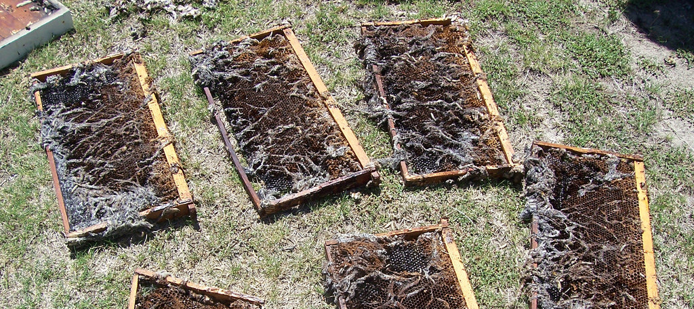

Wax Moth.

Wax moths can be a terrible problem to bee hives if allowed to get out of hand and will destroy brood comb in a very short time if unchecked. There are some simple steps to prevent the damage, but first, it might be simpler to discuss the life cycle to understand where the problem comes from. A normal healthy hive will keep wax moth under control by ejecting the larvae, but weakened hives with small populations can be overcome by wax moth infestations destroying the brood comb, ultimately destroying the hive.
There are two varieties of moth which take delight in dining on wax the ‘Greater’ and also the ‘Lesser’ Wax Moth the greater wax moth is a mottled grey in colour approx 1 ½ inches in length while the lesser is smaller and slimmer approx a ½ inch in length and white/silver. As all moths, they prefer night time to mate and lay eggs.
Most wax moths are seen in early summer in our area, and we see them under the overhang of hive roofs, out of the daylight, when the hive is disturbed they take off quickly and disappear into the trees.
Preferring to work in the dark the moths enter the hive through top entrances left unscreened and unguarded by the bees, perhaps a sudden cold snap making the bees cluster, and lay eggs in cracks unavailable to the bees. These hatch in due course and the grey larvae begin feeding on wax and hive debris, tunnelling just under the cell caps and feeding on the discarded cocoons left by the bees, leaving behind an extremely sticky white web, similar to spiders web but almost impossible to pull apart. So perhaps they are misnamed and should be called Cocoon moths?
With a little care, the wax moth can be outwitted and the damage they do can be prevented. First, the practice of top entrances should be examined, provided they have screening then there will be no problem. Leaving a big hole in the inner cover, then a badly fitting roof is just asking for trouble. Or even worse those holes drilled in the top of boxes allowing the bees a second entrance are a real problem. Apart from pollen in the honey, a cold evening and the bees pull down and form a cluster leaving that entrance unguarded, easy pickings for the wax moth, as they will fly in cooler conditions than bees.
They do say that prevention is better than cure. I have already given one way, using screening to prevent wax moth entering the hive top. The second point could be to use a trap to draw the moths away from the hive area. There are, to my knowledge, no commercial wax moth traps, but we use a country cure which works extremely well and I would recommend to all.
|
Check if flower blooming site is vulnerable to wax moth. Select a flower blooming location |